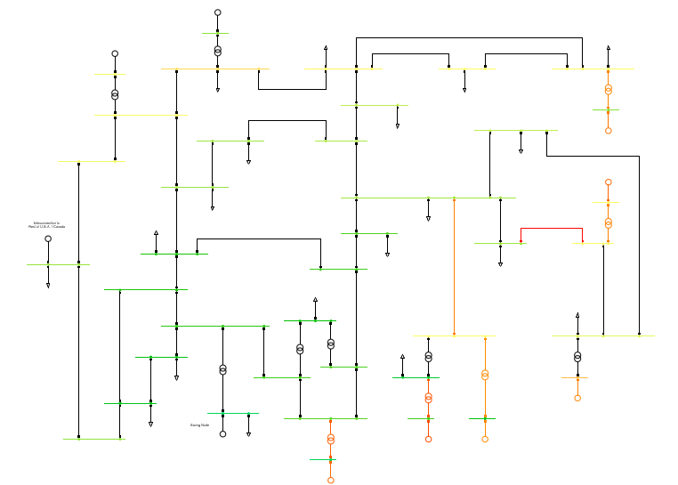
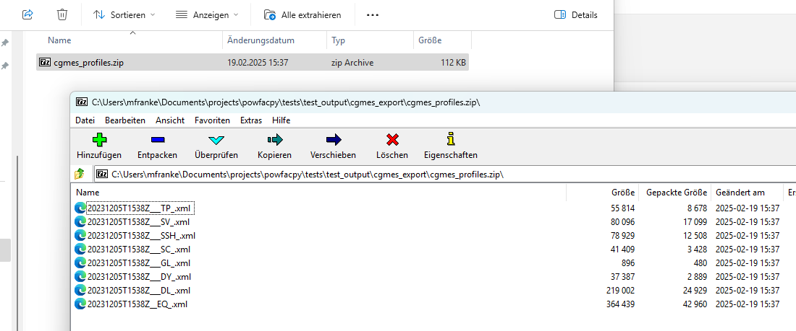
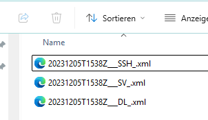
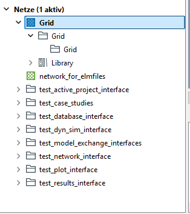
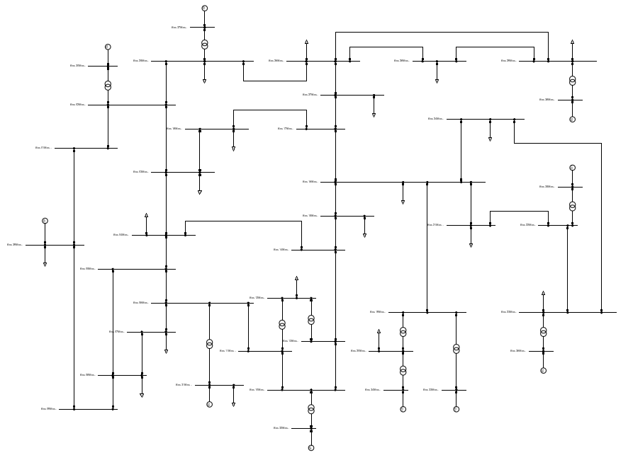
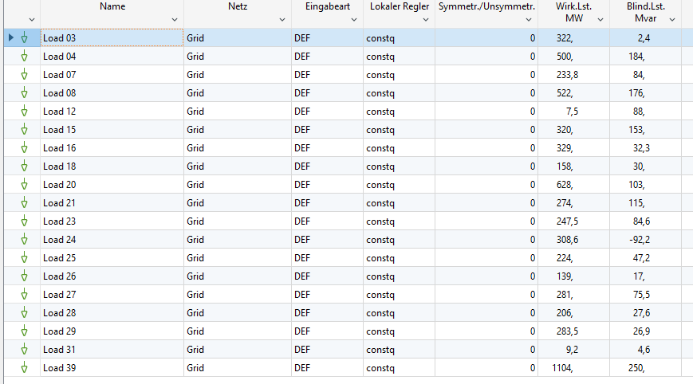
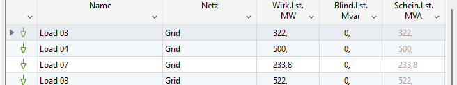
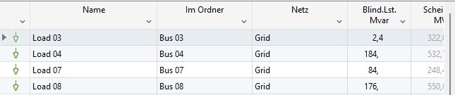

# If you use IPython/Jupyter:
import sys
sys.path.append(
r"C:\Program Files\DIgSILENT\PowerFactory 2024 SP4\Python\3.10"
) # you may use a different directory
# Get the PF app
import powerfactory
import powfacpy
app = powerfactory.GetApplication()
app.ActivateProject(
r"powfacpy\powfacpy_tests_copy_where_tests_run"
) # You may change the project path.
app.Show()CGMES handling with model exchange interface
The tutorials have been moved to the website. The version here is no longer maintained.
1 About CGMES
CGMES stands for Common Grid Model Exchange Standard. It is a standard developed to facilitate the exchange of grid models and data among different stakeholders in the power system industry, such as utilities, system operators, and software vendors.
CGMES is structured using several profiles, each contained in a separate file. An exemplary seleciton of profiles is given in Table 1.
| Abbreviation | Description |
|---|---|
| SSH | Steady State Hypothesis (steady state Load Flow Data with changeable parameters) |
| EQ | Equipment Model |
| TP | Topology profile: contains all topology objects, i.e. how equipment is electrically connected. |
| SV | State Variables |
| DL | Diagram Layout |
For more information on CGMES, visit the following links: Video, ENTSO-E website, and Document.
2 Model exchange interface
The model exchange application of powfacpy contains functionalities to import and export CGMES data, as well as to update an existing CGMES grid with new data, for example from an SSH file.
This tutorials demonstrates how to
- Import CGMES
- Export CGMES
- Update CGMES using SSH and DL
First, activate the PowerFactory project as outlined in the getting started tutorial.
Get powfacpy objects
pfcgmes = CGMES(app)
pfp = pfcgmes.act_prjActivate study case
study_case = pfp.get_unique_obj(r'Study Cases\test_model_exchange_interfaces\Study Case')
study_case.Activate()1The following grid exists in that project.

3 Export to CGMES
First, let’s export this grid to CGMES. The function cgmes_export() exports the active grid to OUTPUT_PATH.
OUTPUT_PATH = r'..\tests\tests_output\cgmes_export'
pfcgmes.cgmes_export(OUTPUT_PATH, selected_profiles="all", as_zip=True)Here we can see the exported file.

It is a .zip file, because we configured as_zip=True.
We can also get the separate files directly into the folder by setting as_zip=False. Additionally we can choose which profiles to export:
pfcgmes.cgmes_export(OUTPUT_PATH, selected_profiles="ssh dl sv", as_zip=False)Now we exported the .xml files (not zipped) and only got SSH, DL and SV:

4 Import from CGMES
Now we could import our grid into another simulation software.
Here, we’ll demonstrate this by switching to a different study case and importing the grid again.
study_case.Deactivate()
new_study_case = pfp.create_in_folder(
"New Study Case.IntCase",
study_case.GetParent(),
overwrite=True,
)
new_study_case.Activate()0Then import the previously exported CGMES files using cgmes_import()
new_grid = pfcgmes.cgmes_import(
OUTPUT_PATH + "\\"
+ pfcgmes.exported_zip_name # default name that pfcgmes uses for exported zip file
+ ".zip"
)new_grid.Activate()0The imorted grid will have the same name as the original.
Import location is the root of the network data folder. It has a different folder structure than the original and a library folder with model types is imported with the grid.

But the resulting grid model still looks the same as the original:

5 Update model with external data
Using CGMES, we can update a model using external data (e.g. SSH and DL).
In this case, we will think of study_case as some external reference model. We will change its data and update new_study_case using CGMES.
study_case.Activate()0All our loads have reactive power setpoints.

Let’s change them in the reference model. We will set them to 0, just as an example.
pfp.app.Hide()
reference_grid = pfp.get_unique_obj(r'Network Model\Network Data\test_model_exchange_interfaces\Grid')
for load in pfcgmes.act_prj.get_obj("*.ElmLod", include_subfolders=True, parent_folder=reference_grid):
load.qlini = 0
pfp.app.Show()Now the reactive power of all loads in the reference model are 0:

While in the new model it is still like it was before:

To update our new model with the change in reference model, we first export the reference model’s changes to CGMES using the SSH and DL profiles.
pfcgmes.cgmes_export(OUTPUT_PATH, selected_profiles="ssh dl", as_zip=True)Then we take this to our new model.
new_study_case.Activate()0We need to supply the CIM archive that we used to import the new model. It is used as a base archive and needed for the update.
base_archive = pfcgmes.act_prj.get_unique_obj(
pfcgmes.import_archive_name, parent_folder=pfcgmes.archive_folder
)And by running update_profiles() we can update our new model.
pfcgmes.update_profiles(
update_file_path=OUTPUT_PATH + "\\" + pfcgmes.exported_zip_name + ".zip",
base_archive=base_archive
)Now, the changes made in the reference model are also present in our new model.